SANS data reduction#
This notebook will guide you through the data reduction for the SANS experiment that you simulated with McStas yesterday.
The following is a basic outline of what this notebook will cover:
Loading the NeXus files that contain the data
Inspect/visualize the data contents
How to convert the raw
time-of-flightcoordinate to something more useful (\(\lambda\), \(Q\), …)Normalize to a flat field run
Write the results to file
Process more than one pulse
import numpy as np
import scipp as sc
import plopp as pp
import utils
Process the run with a sample#
Load the NeXus file data#
folder = "../3-mcstas/SANS_with_sample_1_pulse"
sample = utils.load_sans(folder)
The first way to inspect the data is to view the HTML representation of the loaded object.
Try to explore what is inside the data, and familiarize yourself with the different sections (Dimensions, Coordinates, Data).
sample
- event: 7902952
- position(event)vector3m[0. 0.02919886 3. ], [0. 0.02950786 3. ], ..., [0. 0.26016233 3. ], [0. 0.04671759 3. ]
Values:
array([[0. , 0.02919886, 3. ], [0. , 0.02950786, 3. ], [0. , 0.02984397, 3. ], ..., [0. , 0.06873011, 3. ], [0. , 0.26016233, 3. ], [0. , 0.04671759, 3. ]]) - sample_position()vector3m[0. 0. 0.]
Values:
array([0., 0., 0.]) - source_position()vector3m[ 0. 0. -150.]
Values:
array([ 0., 0., -150.]) - tof(event)float64ms209.117, 209.117, ..., 249.384, 239.799
Values:
array([209.11678547, 209.11741565, 209.1194843 , ..., 220.39671026, 249.38432812, 239.79887897]) - x(event)float64m0.0, 0.0, ..., 0.0, 0.0
Values:
array([0., 0., 0., ..., 0., 0., 0.]) - y(event)float64m0.029, 0.030, ..., 0.260, 0.047
Values:
array([0.02919886, 0.02950786, 0.02984397, ..., 0.06873011, 0.26016233, 0.04671759])
- (event)float64counts3.141, 0.000, ..., 2.034e-09, 0.003
Values:
array([3.14070959e+00, 3.14544791e-04, 3.15019338e-08, ..., 2.34464248e-20, 2.03415011e-09, 3.11992679e-03])
Visualize the data#
Here is a 2D visualization of the neutron counts, histogrammed along the tof and y dimensions:
sample.hist(tof=200, y=200).plot(norm="log", vmin=1.0e-2)
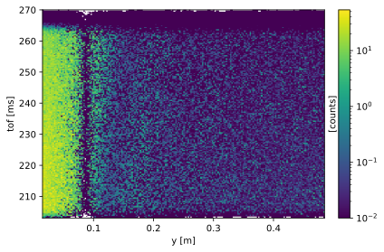
Histogramming along y only gives a 1D plot:
sample.hist(y=200).plot(norm="log")
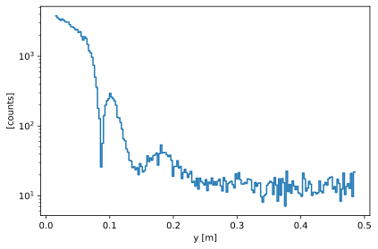
Coordinate transformations#
The first step in the data reduction is to convert the raw event coordinates (position, time-of-flight) to something physically meaningful such as wavelength (\(\lambda\)) or momentum transfer (\(Q\)).
Scipp has a dedicated method for this called transform_coords (see docs here).
We begin with a standard graph which describes how to compute e.g. the wavelength from the other coordinates in the raw data.
from scippneutron.conversion.graph.beamline import beamline
from scippneutron.conversion.graph.tof import kinematic
graph = {**beamline(scatter=True), **kinematic("tof")}
sc.show_graph(graph, simplified=True)

To compute the wavelength of all the events, we simply call transform_coords on our loaded data,
requesting the name of the coordinate we want in the output ("wavelength"),
as well as providing it the graph to be used to compute it (i.e. the one we defined just above).
This yields
sample_wav = sample.transform_coords("wavelength", graph=graph)
sample_wav
- event: 7902952
- L1()float64m150.0
Values:
array(150.) - L2(event)float64m3.000, 3.000, ..., 3.011, 3.000
Values:
array([3.00014209, 3.00014512, 3.00014844, ..., 3.0007872 , 3.01125961, 3.00036373]) - Ltotal(event)float64m153.000, 153.000, ..., 153.011, 153.000
Values:
array([153.00014209, 153.00014512, 153.00014844, ..., 153.0007872 , 153.01125961, 153.00036373]) - incident_beam()vector3m[ 0. 0. 150.]
Values:
array([ 0., 0., 150.]) - position(event)vector3m[0. 0.02919886 3. ], [0. 0.02950786 3. ], ..., [0. 0.26016233 3. ], [0. 0.04671759 3. ]
Values:
array([[0. , 0.02919886, 3. ], [0. , 0.02950786, 3. ], [0. , 0.02984397, 3. ], ..., [0. , 0.06873011, 3. ], [0. , 0.26016233, 3. ], [0. , 0.04671759, 3. ]]) - sample_position()vector3m[0. 0. 0.]
Values:
array([0., 0., 0.]) - scattered_beam(event)vector3m[0. 0.02919886 3. ], [0. 0.02950786 3. ], ..., [0. 0.26016233 3. ], [0. 0.04671759 3. ]
Values:
array([[0. , 0.02919886, 3. ], [0. , 0.02950786, 3. ], [0. , 0.02984397, 3. ], ..., [0. , 0.06873011, 3. ], [0. , 0.26016233, 3. ], [0. , 0.04671759, 3. ]]) - source_position()vector3m[ 0. 0. -150.]
Values:
array([ 0., 0., -150.]) - tof(event)float64ms209.117, 209.117, ..., 249.384, 239.799
Values:
array([209.11678547, 209.11741565, 209.1194843 , ..., 220.39671026, 249.38432812, 239.79887897]) - wavelength(event)float64Å5.407, 5.407, ..., 6.448, 6.200
Values:
array([5.40700881, 5.40702499, 5.40707837, ..., 5.69864311, 6.44771428, 6.20032854]) - x(event)float64m0.0, 0.0, ..., 0.0, 0.0
Values:
array([0., 0., 0., ..., 0., 0., 0.]) - y(event)float64m0.029, 0.030, ..., 0.260, 0.047
Values:
array([0.02919886, 0.02950786, 0.02984397, ..., 0.06873011, 0.26016233, 0.04671759])
- (event)float64counts3.141, 0.000, ..., 2.034e-09, 0.003
Values:
array([3.14070959e+00, 3.14544791e-04, 3.15019338e-08, ..., 2.34464248e-20, 2.03415011e-09, 3.11992679e-03])
The result has a wavelength coordinate. We can also plot the result:
sample_wav.hist(wavelength=200).plot()
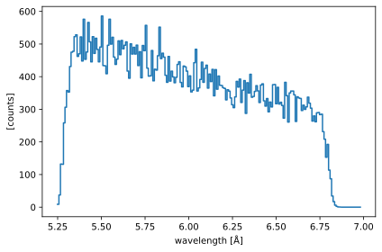
We can see that the range of observed wavelengths agrees with the range set in the McStas model (5.25 - 6.75 Å)
Exercise 1: convert raw data to \(Q\)#
Instead of wavelength as in the example above, the task is now to convert the raw data to momentum-transfer \(Q\).
The transformation graph is missing the computation for \(Q\) so you will have to add it in yourself. As a reminder, \(Q\) is computed as follows
You have to:
create a function that computes \(Q\)
add it to the graph
call
transform_coordsusing the new graph
Solution:
Show code cell content
def compute_q(two_theta, wavelength):
return (4.0 * np.pi) * sc.sin(two_theta / 2) / wavelength
graph["Q"] = compute_q
sample_q = sample.transform_coords("Q", graph=graph)
sample_q
- event: 7902952
- L1()float64m150.0
Values:
array(150.) - L2(event)float64m3.000, 3.000, ..., 3.011, 3.000
Values:
array([3.00014209, 3.00014512, 3.00014844, ..., 3.0007872 , 3.01125961, 3.00036373]) - Ltotal(event)float64m153.000, 153.000, ..., 153.011, 153.000
Values:
array([153.00014209, 153.00014512, 153.00014844, ..., 153.0007872 , 153.01125961, 153.00036373]) - Q(event)float641/Å0.011, 0.011, ..., 0.084, 0.016
Values:
array([0.01130972, 0.01142937, 0.01155943, ..., 0.02525508, 0.08427071, 0.0157792 ]) - incident_beam()vector3m[ 0. 0. 150.]
Values:
array([ 0., 0., 150.]) - position(event)vector3m[0. 0.02919886 3. ], [0. 0.02950786 3. ], ..., [0. 0.26016233 3. ], [0. 0.04671759 3. ]
Values:
array([[0. , 0.02919886, 3. ], [0. , 0.02950786, 3. ], [0. , 0.02984397, 3. ], ..., [0. , 0.06873011, 3. ], [0. , 0.26016233, 3. ], [0. , 0.04671759, 3. ]]) - sample_position()vector3m[0. 0. 0.]
Values:
array([0., 0., 0.]) - scattered_beam(event)vector3m[0. 0.02919886 3. ], [0. 0.02950786 3. ], ..., [0. 0.26016233 3. ], [0. 0.04671759 3. ]
Values:
array([[0. , 0.02919886, 3. ], [0. , 0.02950786, 3. ], [0. , 0.02984397, 3. ], ..., [0. , 0.06873011, 3. ], [0. , 0.26016233, 3. ], [0. , 0.04671759, 3. ]]) - source_position()vector3m[ 0. 0. -150.]
Values:
array([ 0., 0., -150.]) - tof(event)float64ms209.117, 209.117, ..., 249.384, 239.799
Values:
array([209.11678547, 209.11741565, 209.1194843 , ..., 220.39671026, 249.38432812, 239.79887897]) - two_theta(event)float64rad0.010, 0.010, ..., 0.087, 0.016
Values:
array([0.00973265, 0.00983564, 0.00994766, ..., 0.02290603, 0.08650436, 0.01557127]) - wavelength(event)float64Å5.407, 5.407, ..., 6.448, 6.200
Values:
array([5.40700881, 5.40702499, 5.40707837, ..., 5.69864311, 6.44771428, 6.20032854]) - x(event)float64m0.0, 0.0, ..., 0.0, 0.0
Values:
array([0., 0., 0., ..., 0., 0., 0.]) - y(event)float64m0.029, 0.030, ..., 0.260, 0.047
Values:
array([0.02919886, 0.02950786, 0.02984397, ..., 0.06873011, 0.26016233, 0.04671759])
- (event)float64counts3.141, 0.000, ..., 2.034e-09, 0.003
Values:
array([3.14070959e+00, 3.14544791e-04, 3.15019338e-08, ..., 2.34464248e-20, 2.03415011e-09, 3.11992679e-03])
Histogram the data in \(Q\)#
The final step in processing the sample run is to histogram the data into \(Q\) bins.
sample_h = sample_q.hist(Q=200)
sample_h.plot(norm="log", vmin=1)
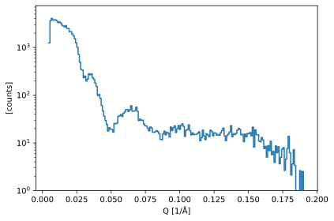
The histogrammed data currently has no standard deviations on the counts. This needs to be added after we have performed the histogramming operation.
When dealing with neutron events, we assume the data has a Poisson distribution. This means that the variance in a bin is equal to the counts in that bin (the standard deviation is then \(\sigma = \sqrt{\mathrm{counts}}\)).
We provide a helper function that will add Poisson variances to any given input:
utils.add_variances(sample_h)
sample_h.data
- (Q: 200)float64counts1244.289, 3631.743, ..., 2.517, 0.019σ = 35.274, 60.264, ..., 1.587, 0.139
Values:
array([1.24428917e+03, 3.63174350e+03, 4.06798137e+03, 3.75430700e+03, 3.80577870e+03, 3.77699420e+03, 3.62457282e+03, 3.31237962e+03, 3.45318641e+03, 3.26596661e+03, 2.93585359e+03, 2.82088603e+03, 2.70050049e+03, 2.87728473e+03, 2.51513748e+03, 2.51581350e+03, 2.13873488e+03, 2.14808501e+03, 1.93346078e+03, 1.75733649e+03, 1.52250221e+03, 1.25310611e+03, 1.01051454e+03, 7.15645614e+02, 4.90887965e+02, 3.46016144e+02, 3.36228702e+02, 2.32521224e+02, 2.51735379e+02, 1.97518081e+02, 2.17734553e+02, 2.80982926e+02, 2.66696055e+02, 2.80156242e+02, 2.31826111e+02, 2.15326451e+02, 1.79064220e+02, 1.52814057e+02, 9.82987633e+01, 1.03212891e+02, 8.55203090e+01, 6.09404658e+01, 4.68344285e+01, 3.60944221e+01, 2.96253045e+01, 2.43014875e+01, 1.76976369e+01, 2.08677072e+01, 1.93081543e+01, 1.91370241e+01, 1.69219393e+01, 2.57182418e+01, 2.51620856e+01, 2.58341059e+01, 3.58125038e+01, 3.69509180e+01, 3.94012594e+01, 3.56665518e+01, 4.16998677e+01, 4.45378317e+01, 4.98837280e+01, 5.00348866e+01, 4.55916217e+01, 4.92622260e+01, 6.03258596e+01, 4.61579715e+01, 4.60614486e+01, 4.75354179e+01, 5.59853871e+01, 4.58288620e+01, 2.93487563e+01, 3.15442683e+01, 2.96392654e+01, 3.00572083e+01, 2.49514009e+01, 2.27570132e+01, 2.26312591e+01, 2.03389823e+01, 1.79130968e+01, 2.15587874e+01, 2.05418647e+01, 1.67894566e+01, 1.66951995e+01, 1.72419367e+01, 1.80958331e+01, 1.71466013e+01, 1.54945507e+01, 1.18703469e+01, 1.16424020e+01, 1.53299234e+01, 1.76880585e+01, 1.47246218e+01, 1.66834795e+01, 1.59684062e+01, 1.33019808e+01, 2.15168002e+01, 1.81168047e+01, 2.08823067e+01, 2.28284325e+01, 1.65094141e+01, 1.98026263e+01, 2.31785894e+01, 1.92000551e+01, 2.34227649e+01, 2.51138850e+01, 2.21937465e+01, 1.36967124e+01, 1.83607521e+01, 1.92044995e+01, 2.39162552e+01, 1.82252868e+01, 1.47278396e+01, 1.62551845e+01, 1.48785972e+01, 1.51388105e+01, 1.51104267e+01, 1.59849564e+01, 1.71452151e+01, 1.11125072e+01, 1.29051142e+01, 1.85313870e+01, 1.39589443e+01, 1.16517496e+01, 1.55445565e+01, 1.46361958e+01, 1.34781914e+01, 1.85434938e+01, 1.73782542e+01, 1.41100871e+01, 1.63003648e+01, 1.60557882e+01, 1.45451670e+01, 1.50638492e+01, 1.44593523e+01, 1.63496269e+01, 1.80897263e+01, 2.05605753e+01, 1.40504964e+01, 1.11212798e+01, 1.43187952e+01, 1.52836325e+01, 1.69507803e+01, 2.29670754e+01, 1.34632370e+01, 1.56395591e+01, 1.49300901e+01, 1.57561817e+01, 1.84541302e+01, 2.01676012e+01, 1.91589093e+01, 1.47878300e+01, 1.51620846e+01, 1.06112362e+01, 1.52976050e+01, 1.34049451e+01, 1.58468652e+01, 1.55246886e+01, 1.64908802e+01, 1.40598858e+01, 2.14011300e+01, 8.17476046e+00, 1.87714524e+01, 1.49555548e+01, 1.48183907e+01, 1.09216166e+01, 1.05447432e+01, 1.29599410e+01, 1.15659867e+01, 7.60633371e+00, 8.48927539e+00, 5.02488612e+00, 8.80145147e+00, 6.86672965e+00, 1.08463908e+01, 5.65749352e+00, 6.65033517e+00, 3.91980438e+00, 8.64933259e+00, 6.23344835e+00, 8.33925409e+00, 3.64535092e+00, 5.00648134e+00, 7.38391247e+00, 7.97344514e+00, 2.65432761e+00, 4.58154517e+00, 7.59875721e+00, 1.37311757e+01, 6.21343918e+00, 2.13220498e+00, 3.62206912e+00, 7.22657396e+00, 3.36391145e+00, 9.45266357e-01, 5.05475194e-01, 3.56284974e-01, 2.62091405e+00, 3.37203770e-01, 2.51719561e+00, 1.93438712e-02])
Variances (σ²):
array([1.24428917e+03, 3.63174350e+03, 4.06798137e+03, 3.75430700e+03, 3.80577870e+03, 3.77699420e+03, 3.62457282e+03, 3.31237962e+03, 3.45318641e+03, 3.26596661e+03, 2.93585359e+03, 2.82088603e+03, 2.70050049e+03, 2.87728473e+03, 2.51513748e+03, 2.51581350e+03, 2.13873488e+03, 2.14808501e+03, 1.93346078e+03, 1.75733649e+03, 1.52250221e+03, 1.25310611e+03, 1.01051454e+03, 7.15645614e+02, 4.90887965e+02, 3.46016144e+02, 3.36228702e+02, 2.32521224e+02, 2.51735379e+02, 1.97518081e+02, 2.17734553e+02, 2.80982926e+02, 2.66696055e+02, 2.80156242e+02, 2.31826111e+02, 2.15326451e+02, 1.79064220e+02, 1.52814057e+02, 9.82987633e+01, 1.03212891e+02, 8.55203090e+01, 6.09404658e+01, 4.68344285e+01, 3.60944221e+01, 2.96253045e+01, 2.43014875e+01, 1.76976369e+01, 2.08677072e+01, 1.93081543e+01, 1.91370241e+01, 1.69219393e+01, 2.57182418e+01, 2.51620856e+01, 2.58341059e+01, 3.58125038e+01, 3.69509180e+01, 3.94012594e+01, 3.56665518e+01, 4.16998677e+01, 4.45378317e+01, 4.98837280e+01, 5.00348866e+01, 4.55916217e+01, 4.92622260e+01, 6.03258596e+01, 4.61579715e+01, 4.60614486e+01, 4.75354179e+01, 5.59853871e+01, 4.58288620e+01, 2.93487563e+01, 3.15442683e+01, 2.96392654e+01, 3.00572083e+01, 2.49514009e+01, 2.27570132e+01, 2.26312591e+01, 2.03389823e+01, 1.79130968e+01, 2.15587874e+01, 2.05418647e+01, 1.67894566e+01, 1.66951995e+01, 1.72419367e+01, 1.80958331e+01, 1.71466013e+01, 1.54945507e+01, 1.18703469e+01, 1.16424020e+01, 1.53299234e+01, 1.76880585e+01, 1.47246218e+01, 1.66834795e+01, 1.59684062e+01, 1.33019808e+01, 2.15168002e+01, 1.81168047e+01, 2.08823067e+01, 2.28284325e+01, 1.65094141e+01, 1.98026263e+01, 2.31785894e+01, 1.92000551e+01, 2.34227649e+01, 2.51138850e+01, 2.21937465e+01, 1.36967124e+01, 1.83607521e+01, 1.92044995e+01, 2.39162552e+01, 1.82252868e+01, 1.47278396e+01, 1.62551845e+01, 1.48785972e+01, 1.51388105e+01, 1.51104267e+01, 1.59849564e+01, 1.71452151e+01, 1.11125072e+01, 1.29051142e+01, 1.85313870e+01, 1.39589443e+01, 1.16517496e+01, 1.55445565e+01, 1.46361958e+01, 1.34781914e+01, 1.85434938e+01, 1.73782542e+01, 1.41100871e+01, 1.63003648e+01, 1.60557882e+01, 1.45451670e+01, 1.50638492e+01, 1.44593523e+01, 1.63496269e+01, 1.80897263e+01, 2.05605753e+01, 1.40504964e+01, 1.11212798e+01, 1.43187952e+01, 1.52836325e+01, 1.69507803e+01, 2.29670754e+01, 1.34632370e+01, 1.56395591e+01, 1.49300901e+01, 1.57561817e+01, 1.84541302e+01, 2.01676012e+01, 1.91589093e+01, 1.47878300e+01, 1.51620846e+01, 1.06112362e+01, 1.52976050e+01, 1.34049451e+01, 1.58468652e+01, 1.55246886e+01, 1.64908802e+01, 1.40598858e+01, 2.14011300e+01, 8.17476046e+00, 1.87714524e+01, 1.49555548e+01, 1.48183907e+01, 1.09216166e+01, 1.05447432e+01, 1.29599410e+01, 1.15659867e+01, 7.60633371e+00, 8.48927539e+00, 5.02488612e+00, 8.80145147e+00, 6.86672965e+00, 1.08463908e+01, 5.65749352e+00, 6.65033517e+00, 3.91980438e+00, 8.64933259e+00, 6.23344835e+00, 8.33925409e+00, 3.64535092e+00, 5.00648134e+00, 7.38391247e+00, 7.97344514e+00, 2.65432761e+00, 4.58154517e+00, 7.59875721e+00, 1.37311757e+01, 6.21343918e+00, 2.13220498e+00, 3.62206912e+00, 7.22657396e+00, 3.36391145e+00, 9.45266357e-01, 5.05475194e-01, 3.56284974e-01, 2.62091405e+00, 3.37203770e-01, 2.51719561e+00, 1.93438712e-02])
sample_h.plot(norm="log", vmin=1)
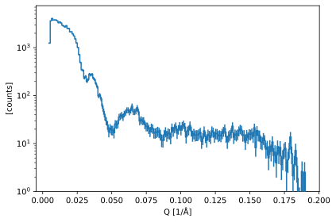
Exercise 2: process flat-field run#
Repeat the step carried out above for the run that contained no sample (also known as a “flat-field” run).
Solution:
Show code cell content
folder = "../3-mcstas/SANS_without_sample_1_pulse"
# Load file
flat = utils.load_sans(folder)
# Convert to Q
flat_q = flat.transform_coords("Q", graph=graph)
# Histogram and add variances
flat_h = flat_q.hist(Q=200)
utils.add_variances(flat_h)
flat_h.plot()
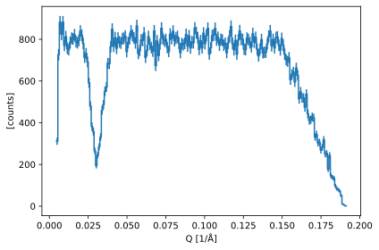
Exercise 3: Normalize the sample run#
The flat-field run is giving a measure of the efficiency of each detector pixel. This efficiency now needs to be used to correct the counts in the sample run to yield a realistic \(I(Q)\) profile.
In particular, this should remove any unwanted artifacts in the data, such as the drop in counts around 0.03 Å-1 due to the air bubble inside the detector tube.
Normalizing is essentially just dividing the sample run by the flat field run.
Hint: you may run into an error like "Mismatch in coordinate 'Q'". Why is this happening? How can you get around it?
Solution:
Show code cell content
normed = sample_h / flat_h
---------------------------------------------------------------------------
DatasetError Traceback (most recent call last)
Cell In[14], line 1
----> 1 normed = sample_h / flat_h
DatasetError: Mismatch in coordinate 'Q' in operation 'divide':
(Q: 201) float64 [1/Å] [0.00452313, 0.00545564, ..., 0.190091, 0.191024]
vs
(Q: 201) float64 [1/Å] [0.0045412, 0.00547496, ..., 0.19036, 0.191294]
Show code cell content
# Make common bins
qbins = sc.linspace("Q", 5.0e-3, 0.2, 201, unit="1/angstrom")
# Histogram both sample and flat-field with same bins
sample_h = sample_q.hist(Q=qbins)
flat_h = flat_q.hist(Q=qbins)
# Add variances to both
utils.add_variances(sample_h, flat_h)
# Normalize
normed = sample_h / flat_h
normed.plot(norm="log", vmin=1.0e-3, vmax=10.0)
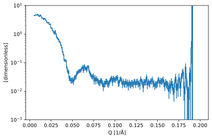
Save result to disk#
Finally, we need to save our results to disk, so that the reduced data can be forwarded to the next step in the pipeline (data analysis).
We will use a simple text file for this:
from scippneutron.io import save_xye
# The simple file format does not support bin-edge coordinates.
# So we convert to bin-centers first.
data = normed.copy()
data.coords["Q"] = sc.midpoints(data.coords["Q"])
save_xye("sans_iofq.dat", data)
Process data from 3 pulses#
We now want to repeat the reduction, but using more than a single pulse to improve our statistics.
We begin by loading the run with 3 pulses.
folder = "../3-mcstas/SANS_with_sample_3_pulse"
sample = utils.load_sans(folder)
sample
- event: 23771169
- position(event)vector3m[0. 0.3943358 3. ], [0. 0.39496479 3. ], ..., [0. 0.18244449 3. ], [0. 0.18006407 3. ]
Values:
array([[0. , 0.3943358 , 3. ], [0. , 0.39496479, 3. ], [0. , 0.39812191, 3. ], ..., [0. , 0.18326858, 3. ], [0. , 0.18244449, 3. ], [0. , 0.18006407, 3. ]]) - sample_position()vector3m[0. 0. 0.]
Values:
array([0., 0., 0.]) - source_position()vector3m[ 0. 0. -150.]
Values:
array([ 0., 0., -150.]) - tof(event)float64ms371.381, 371.385, ..., 374.750, 374.754
Values:
array([371.3809728 , 371.38507889, 371.39214481, ..., 374.748297 , 374.75002158, 374.75386433]) - x(event)float64m0.0, 0.0, ..., 0.0, 0.0
Values:
array([0., 0., 0., ..., 0., 0., 0.]) - y(event)float64m0.394, 0.395, ..., 0.182, 0.180
Values:
array([0.3943358 , 0.39496479, 0.39812191, ..., 0.18326858, 0.18244449, 0.18006407])
- (event)float64counts1.557e-08, 1.448e-12, ..., 4.708e-10, 4.293e-14
Values:
array([1.55695223e-08, 1.44808392e-12, 1.34682811e-16, ..., 5.16219468e-06, 4.70778499e-10, 4.29337536e-14])
sample.hist(tof=200, y=200).plot(norm="log", vmin=1.0e-2)
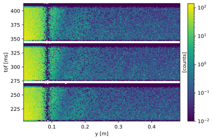
We can see that we have 3 distinct pulses (3 horizontal bands of events).
In order to combine the data from the 3 pulses (also known as ‘pulse folding’), we need to compute a neutron time-of-flight relative to the start of each pulses, instead of absolute time.
Exercise 4: fold the pulses#
You are provided with a function that will perform the folding correctly, assuming you supply it the correct inputs.
help(utils.fold_pulses)
Help on function fold_pulses in module utils:
fold_pulses(data, tof_edges, offsets)
Fold the data into a single pulse.
Parameters
----------
data
Data to fold.
tof_edges
Edges of the time-of-flight bins.
offsets
Time offset to apply to each of the time-of-flight bins.
Instead of reading the bin edges off the figure above, you should try to compute your bin edges in a way that is based on some known parameters of your simulation (e.g. wavelength range) as well as the physical layout of the instrument.
Hints:
You have 3 pulses, so you need to supply 4 time-of-flight edges
Assume the first pulse has a zero time offset
The frequency of the ESS source is 14 Hz
To convert neutron wavelength to speed, you can use: \(~~~~v = \displaystyle\frac{h}{m_{\mathrm{n}}\lambda} \)
Solution:
Show code cell content
AA = sc.Unit("angstrom")
wmin = 5.25 * AA
wmax = 6.75 * AA
h = sc.constants.h
m_n = sc.constants.m_n
# Make 3 pulse offsets, starting at 3, using 14 pulses per second
pulse_offsets = sc.arange("tof", 3.0) * sc.scalar(1.0 / 14.0, unit="s").to(unit="ms")
# Compute minimum and maximum neutron speeds
vmin = (h / (m_n * wmax)).to(unit="m/s")
vmax = (h / (m_n * wmin)).to(unit="m/s")
# Compute pixel mean distance
mean_distance = sc.norm(
sample.coords["position"].mean() - sample.coords["source_position"]
)
# Compute min and max times for neutrons to arrive
tmin = (mean_distance / vmax).to(unit="ms")
tmax = (mean_distance / vmin).to(unit="ms") + pulse_offsets[-1]
# Make evenly-spaced edges
edges = sc.linspace("tof", tmin.value, tmax.value, 4, unit="ms")
# Fold the data
folded = utils.fold_pulses(sample, edges, pulse_offsets)
# Convert to Q and histogram
folded_q = folded.transform_coords("Q", graph=graph)
folded_h = folded_q.hist(Q=qbins)
utils.add_variances(folded_h)
folded.hist(tof=200, y=200).plot(norm="log", vmin=1.0e-2)
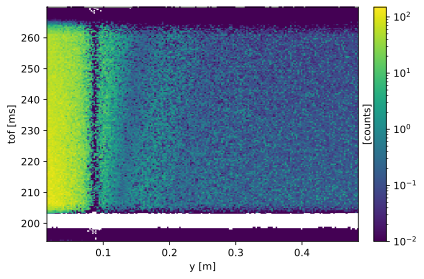
folded_h.plot(norm="log", vmin=1.0)
Show code cell content
folder = "../3-mcstas/SANS_without_sample_3_pulse"
flat = utils.load_sans(folder)
flat_folded = utils.fold_pulses(flat, edges, pulse_offsets)
flat_folded_q = flat_folded.transform_coords("Q", graph=graph)
flat_folded_h = flat_folded_q.hist(Q=qbins)
utils.add_variances(flat_folded_h)
Show code cell content
folded_normed = folded_h / flat_folded_h
folded_normed.plot(norm="log", vmin=1.0e-3, vmax=10.0)
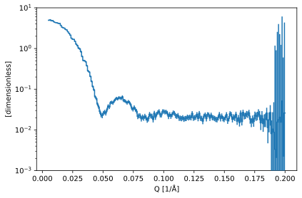
pp.plot({"1-pulse": normed, "3-pulses": folded_normed}, norm="log", vmin=1.0e-3, vmax=10.0)
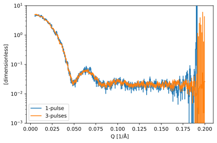
Save results to disk#
Once again, we need to save our results to disk:
data = folded_normed.copy()
data.coords["Q"] = sc.midpoints(data.coords["Q"])
save_xye("sans_iofq_3pulses.dat", data)